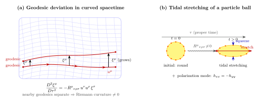

潮汐力是怎么从曲率张量里浮出来的?
上一节我们讲了平行移动: 在弯曲时空里搬一个矢量, 路径不一样, 终点的方向不一样, 这种"搬法之间的差"就是几何的曲率. 这一节我们要把同样的几何事实, 翻译成一种更具体、更可观测的语言: 邻近的两条测地线 — 也就是邻近的两个自由下落物体 — 不会保持初始距离, 它们会被时空"自动地"拉拢或推开. 这种从距离变化里读到曲率的方式, 就是潮汐力.
故事一句话讲完: Einstein 的等效原理说"自由下落里没有引力". 这是对的, 但只对单个点粒子对. 一旦你看两个邻近的自由下落点, 它们之间的相对加速度并不为零, 这一项, 就是引力的"真身". Riemann 张量是它的精确名字.
一、Newton 的潮汐: 从月亮到地球的两个鼓包
先用 Newton 力学把潮汐看清楚. 想象地球是一颗自由下落的小球 — 它在月亮的引力场里以"自由下落"的方式运动 (对, 包括地球在内, 整个地月系统都在围着共同质心做自由下落运动). 但地球不是一个点: 它有半径 $R_\oplus\approx 6371$ km. 离月亮近的那一面, 受到的月亮引力大于地心受到的; 离月亮远的那一面, 受到的引力小于地心受到的. 把"地心的加速度"作为参考系扣掉, 剩下的就是潮汐加速度场.
设月亮质量为 $M$, 地心到月心距离为 $d$. 把坐标原点放在地心, 月亮方向为 $\hat x$. 地球上某点 $\mathbf r=(x,y,z)$ 处的月亮引力是 $\mathbf g(\mathbf r)=-GM(\mathbf r-d\hat x)/|\mathbf r-d\hat x|^3$ 的反向, 即指向月亮 $(d-x,-y,-z)$ 方向. 把它对小量 $\mathbf r/d$ 展到一阶, 减掉地心处的 $\mathbf g(0)=GM\hat x/d^2$, 得到潮汐场:
$$ \mathbf g_{\rm tidal}=\frac{GM}{d^3}(2x,-y,-z). $$
这个场的模式很有讲究: 沿月地连线 ($x$ 方向) 把物体往两端拉伸 (系数 $+2$), 在月亮方向与反月方向各有一个鼓包 (这是地球一天有两次潮汐的原因); 垂直方向 ($y, z$) 系数 $-1$, 是压缩. 三项加起来等于零 — 这是 Laplace 方程 $\nabla^2\Phi=0$ 在真空里的几何反映. 代月亮的数字 ($M_{\rm moon}=7.35\times 10^{22}$ kg, $d=3.84\times 10^8$ m), 拉伸方向潮汐加速度峰值约 $1.7\times 10^{-6}$ m/s$^2$, 大约 $g$ 的 $1.8\times 10^{-7}$ — 体感几乎没有, 但乘上海洋的巨量流体就是米量级的水位起伏.
把同样的算式拿到一个身高 $h=2$ m 的人身上, 站在地球表面. 这次"中心物"是地心, $d=R_\oplus$, $M=M_\oplus$. 头脚之间沿径向被拉伸的潮汐加速度差是
$$ \Delta a=\frac{2GM_\oplus h}{R_\oplus^3}=\frac{2\times 6.67\times 10^{-11}\times 5.97\times 10^{24}\times 2}{(6.37\times 10^6)^3}\approx 6.2\times 10^{-6}\;\mathrm{m/s^2}, $$
大约是 $g$ 的 $6\times 10^{-7}$ — 比月亮在地球上的潮汐还要大一点 (因为地球本身离你很近). 这是非零的, 但你绝感觉不到. 现在换一颗 1 太阳质量恒星级黑洞 ($M=M_\odot=1.99\times 10^{30}$ kg), 你掉到距离视界 100 km 处:
$$ \Delta a=\frac{2GM_\odot h}{r^3}=\frac{2\times 6.67\times 10^{-11}\times 1.99\times 10^{30}\times 2}{(10^5)^3}\approx 5.3\times 10^{8}\;\mathrm{m/s^2}, $$
除以 $g=9.8$ m/s$^2$, 约 $5.4\times 10^7$ $g$ 的全身拉伸 — 也就是头脚之间承受 $5\times 10^7$ 重力加速度差. 任何由化学键维持的物体早就被撕裂了. 把 $h$ 缩到一米尺度 (考虑潮汐场的"梯度"而不是积分), 单位长度上的潮汐加速度梯度约 $10^{22}$ ($g$/m). Penrose 后来给这个过程起了个名字: spaghettification, 意思是你被拉成一根面条. 这是恒星级黑洞致命的原因 — 你还没靠近视界就已经在远处被拉碎. 顺便: 超大质量黑洞 (像 M87* 那种 $M\sim 10^9 M_\odot$) 视界附近的潮汐反而很温和, 因为视界半径正比于 $M$, 而潮汐 $\propto M/r^3\propto 1/M^2$ 在视界处反而压低. 你掉进去的时候, 视界从外面看是一个安静的过程.
二、写成微分方程: 潮汐 = $\Phi$ 的二阶导
从代数式 $\mathbf g_{\rm tidal}\propto(2x,-y,-z)$ 我们看到: 潮汐场是引力势 $\Phi$ 的二阶导. 把月亮势 $\Phi=-GM/r$ (取月亮为原点) 在地心展开两阶, 一阶项就是 $\mathbf g(0)$, 二阶项就是潮汐. 一般地, 把两个邻近自由下落粒子的相对位移记作 $\boldsymbol\xi$. 第一颗粒子的运动方程是 $\ddot{\mathbf r}_1=-\nabla\Phi(\mathbf r_1)$, 第二颗的 $\ddot{\mathbf r}_2=-\nabla\Phi(\mathbf r_2)=-\nabla\Phi(\mathbf r_1+\boldsymbol\xi)$. 相减并展开到一阶 $\boldsymbol\xi$:
$$ \ddot{\xi}^i=-\,\partial_j\partial_i\Phi\;\xi^j\equiv -\,T^i{}_j\,\xi^j,\qquad T^i{}_j\equiv\partial_j\partial_i\Phi. $$
这是 Newton 引力下的"测地偏离方程". $T^i{}_j$ 称为潮汐张量, 它是 $\Phi$ 的 Hessian. 在真空里 Laplace 方程 $\nabla^2\Phi=T^i{}_i=0$ — 三个对角元加起来为零, 这正是上一节我们看到的"$+2,-1,-1$"组合. 这也是为什么地球两侧都有一个潮汐鼓包: 数学上由 trace-free 强迫.
把 $T^i{}_j$ 看作一个矩阵, 它有三个本征值 (沿主轴方向的拉伸/压缩率). 在拉伸轴 $\xi^x$ 方向, 解 $\ddot\xi^x=(2GM/r^3)\xi^x$, 是一个发散的指数解 — 这是黑洞潮汐撕裂物体的真正机制: 它不是"拉一下", 而是指数放大微小的初始分离. 半个潮汐周期后, 长度增加 $e$ 倍.
三、相对论里的潮汐: 测地偏离与 Riemann 张量
现在到 GR. 等效原理说: 任何点粒子, 在它瞬时的自由下落坐标系里, 都满足 $\ddot x^\mu=0$ (没有引力). 这是局部的, 一阶的事实 — 我们可以用局部惯性系 (Riemann 法坐标)把度规凑成 $g_{\mu\nu}=\eta_{\mu\nu}+O(x^2)$, 一阶导数全消; 但二阶导数, $\partial^2 g$, 一般是消不掉的. 那个二阶残差就是曲率, 而它出现在两条测地线的相对运动里.
设一族测地线 $x^\mu(\tau,s)$, $\tau$ 是固有时, $s$ 标记不同测地线 (比如不同初始位置的两个自由下落点). 切矢量 $u^\mu=\partial x^\mu/\partial\tau$ 是各自的四速度, 偏离矢量 $\xi^\mu=\partial x^\mu/\partial s$ 是邻近测地线之间的连接. 令 $D/D\tau$ 表示沿测地线的协变导数 $u^\nu\nabla_\nu$. 由测地方程 $u^\nu\nabla_\nu u^\mu=0$ 与 $[u,\xi]=0$ (流参数对易), 计算 $D^2\xi^\mu/D\tau^2$, 经过一段标准代数 (用到 Riemann 张量定义 $[\nabla_\mu,\nabla_\nu]V^\rho=R^\rho{}_{\sigma\mu\nu}V^\sigma$), 得到
$$ \boxed{\;\frac{D^2\xi^\mu}{D\tau^2}=-R^\mu{}_{\nu\rho\sigma}\,u^\nu u^\rho\,\xi^\sigma.\;} \tag{1} $$
这就是测地偏离方程 (Jacobi 方程的 GR 版本). 它说: 两条邻近自由下落世界线之间的相对加速度, 由 Riemann 曲率张量与四速度、偏离矢量的缩并给出. 在弱场极限下, 把度规取成 $g_{00}=-(1+2\Phi/c^2)$, $g_{ij}=\delta_{ij}$, 取 $u^\mu\approx(c,0,0,0)$, 算出的 $R^i{}_{0j0}\approx \partial_j\partial_i\Phi/c^2$, 公式 (1) 退化成 $\ddot\xi^i=-\partial_j\partial_i\Phi\,\xi^j$ — 正好是 Newton 潮汐张量. 这是 GR 与 Newton 在弱场对接的最干净地方之一: 牛顿的"潮汐张量"等价于 GR 的"$R^i{}_{0j0}$". 引力的真身, 不是 $\Phi$ 自己 (那东西可以被坐标变换消掉, 自由下落里就是这样), 而是 $\partial^2\Phi$, 也就是 Riemann.
Riemann 张量本身是怎么定义的? 它来自上一节的平行移动不可对易. 给两个矢量场 $\nabla_\mu, \nabla_\nu$, 它们的对易子作用在矢量上不为零, 这个差就是 Riemann 张量与原矢量的缩并:
$$ R^\rho{}_{\sigma\mu\nu}=\partial_\mu\Gamma^\rho_{\nu\sigma}-\partial_\nu\Gamma^\rho_{\mu\sigma}+\Gamma^\rho_{\mu\lambda}\Gamma^\lambda_{\nu\sigma}-\Gamma^\rho_{\nu\lambda}\Gamma^\lambda_{\mu\sigma}. \tag{2} $$
它依赖 $\Gamma$, 而 $\Gamma$ 在局部惯性系里可以为零 (一阶); 但 (2) 里的偏导 $\partial\Gamma$ 部分一般不为零. 这就是为什么 Riemann 张量是引力的"几何记号": 你可以让 $\Gamma=0$ 在一点上, 但你不能同时让 $\partial\Gamma=0$, 除非时空本来就是平的. Riemann 张量是真正的"引力存在性指标" — 它为零等价于时空可以被全局展平到 Minkowski.
Riemann 张量在 4D 时空里名义上有 $4^4=256$ 个分量, 但对称性 ($R_{\rho\sigma\mu\nu}=-R_{\sigma\rho\mu\nu}=-R_{\rho\sigma\nu\mu}=R_{\mu\nu\rho\sigma}$ 加第一 Bianchi $R_{\rho[\sigma\mu\nu]}=0$) 把独立分量压到 20 个. 把它们沿 $u^\mu$ 投影到三个空间方向, 就得到观察者眼中的潮汐张量 ($3\times 3$ 对称矩阵, 6 个独立分量); 其余的与引力波偏振、磁部分相关.
四、历史: Riemann, Levi-Civita, Einstein 的接力
Bernhard Riemann 1854 年在哥廷根做就职演讲《论几何学的基础假设》. 演讲提出的两件事, 后来成了 GR 的几何骨架: 一, 几何不必嵌入更高维欧氏空间, 度规 $g_{ij}(x)$ 本身就是一切; 二, 在度规给定的空间里有内秉的截面曲率, 度量"邻近测地线的偏离速率", 与我们今天写的 Riemann 张量完全等价 ($R^\rho{}_{\sigma\mu\nu}$ 这个公式在 Riemann 1861 年的"答 Paris 奖"论文里就有了, 当时叫Krümmungstensor). 那一年 Riemann 39 岁, 已经非常虚弱, 七年后在意大利死于结核.
把 Riemann 几何完全形式化的, 是意大利数学家 Tullio Levi-Civita. 1900 年前后他与 Ricci-Curbastro 写出《张量分析》, 把度规、联络、曲率、Bianchi 恒等式整理成一套绝对运算法 (calcolo differenziale assoluto), 这就是 Einstein 后来用的语言. 1915 年 Einstein 给 Levi-Civita 写信讨论 GR, 后者立刻指出几个数学瑕疵, Einstein 在回信里说: "我钦佩您这门微积分的优雅, 它几乎像变魔术地从 Ricci 流到我的头上."
Einstein 自己拿到 Riemann 张量是 1912 年和苏黎世同学 Marcel Grossmann 一起做的. Einstein 已从等效原理推出引力红移与光偏折, 但还没有几何语言来写场方程. 数学家 Grossmann 翻 Ricci-Levi-Civita 的工作, 找到了 Riemann 张量. 1913 年两人发表《纲要》(Entwurf), 引入了 Riemann 与 Ricci 张量, 但最初的场方程不对; Einstein 在 1915 年才找到正确形式 $R_{\mu\nu}-\tfrac{1}{2}Rg_{\mu\nu}=8\pi G T_{\mu\nu}/c^4$ — 那是下一节的事.
实验上, 测地偏离方程的检验最直观的是引力波探测. LIGO 探测到的 GW150914 信号, 直接测量的就是: 黑洞合并发出的引力波经过地球时, 让 4 km 长的两条互相垂直臂的相对长度差变化 — 这是测地偏离方程 (1) 的实验验证, 数字是 $\Delta L/L\sim 10^{-21}$. 1916 年 Einstein 推导引力波时用的就是测地偏离方程: 引力波的两个偏振 $h_+$ 和 $h_\times$ 各自对应一种潮汐变形模式 (沿一个轴拉伸, 沿垂直轴压缩, 各占一半), Riemann 张量的振荡分量直接给出可被 LIGO 看见的物理量.

五、潮汐力作为"引力存在性"的最终证据
到这里, 我们终于可以回答一个从第一节就萦绕的问题: 既然等效原理告诉我们"自由下落里没有引力", 那"引力存在"这件事到底是什么意思? 答案是: 引力是潮汐, 它的精确名字是 Riemann 张量. 单个点粒子在自由下落参考系里看不到任何引力效应 — 这是对的. 但只要你身体有限大、或者你有两个邻近的实验室、或者你周围有一团测试粒子, 你就立刻看到一个不能被坐标变换消掉的张量场: 它把你的不同部分以不同的速度往不同方向拉. 这就是引力.
这个"潮汐 = 真引力"的视角还回答了另一个困惑: 为什么 Einstein 方程 (下一节) 是关于 $R_{\mu\nu}$ 的二阶偏微分方程? 因为 $R$ 由 $\partial^2 g$ 组成, 而 $\partial^2 g$ 才是引力的本体 — $g$ 自己不是 (可以靠坐标变换调整), $\partial g$ 也不是 (一阶导可以在一点上消去). $\partial^2 g$ 是无法消去的部分, 它就是潮汐, 就是 Riemann.
这个观点的尽头是 Penrose 1965 年的奇点定理. 黑洞内部的奇异性, 不是 $g_{\mu\nu}$ 在某个坐标里看起来无限大 (那可能只是坐标坏点, 比如视界), 而是Kretschmann 标量 $K=R_{\mu\nu\rho\sigma}R^{\mu\nu\rho\sigma}$ — Riemann 自身缩并的二次不变量 — 在物理上发散. Schwarzschild 黑洞中心 $K=48G^2M^2/(c^4 r^6)$ 在 $r\to 0$ 时趋无穷, 这就是"真奇点"的精确数学含义. Riemann 是引力的指纹.
下一节我们要做的事是把"曲率"与"物质"挂钩: 物质告诉时空怎么弯, 时空告诉物质怎么动 — 这就是 Einstein 场方程.
小结
这一节我们用等效原理的"局部 vs 全局"对比把潮汐力定位成了引力的真身: 单粒子在自由下落里测不到引力, 但邻近两点的相对加速度不为零, 它由Riemann 曲率张量给出. Newton 潮汐 $\ddot\xi^i=-\partial_j\partial_i\Phi\,\xi^j$ 在 GR 里被普及为测地偏离方程 $D^2\xi^\mu/D\tau^2=-R^\mu{}_{\nu\rho\sigma}u^\nu u^\rho\xi^\sigma$, 把潮汐张量与 Riemann 的 $R^i{}_{0j0}$ 分量精确等同. 数字上, 地球表面对身高 $h=2$ m 的人的潮汐 $\sim 6\times 10^{-6}$ m/s$^2$ ($\sim 6\times 10^{-7}\,g$), 微小到不被察觉; 1 太阳质量黑洞 100 km 处, 同一个人承受的潮汐拉伸 $\sim 5\times 10^7\,g$, 单位长度上的梯度高达 $\sim 10^{22}\,g$/m, 即 Penrose 命名的 spaghettification. Riemann 张量 1854 年由 Riemann 引入, 1900 年 Levi-Civita 形式化, 1912 年由 Grossmann 介绍给 Einstein. LIGO 测到的 $\Delta L/L\sim 10^{-21}$ 就是 (1) 的实验验证. 黑洞中心的真奇点由 Kretschmann 标量 $K=R_{\mu\nu\rho\sigma}R^{\mu\nu\rho\sigma}$ 发散定义. 下一节我们要把曲率 (Riemann 与它的缩并 Ricci) 与物质 (能动张量) 联起来, 写出 Einstein 场方程.
▲